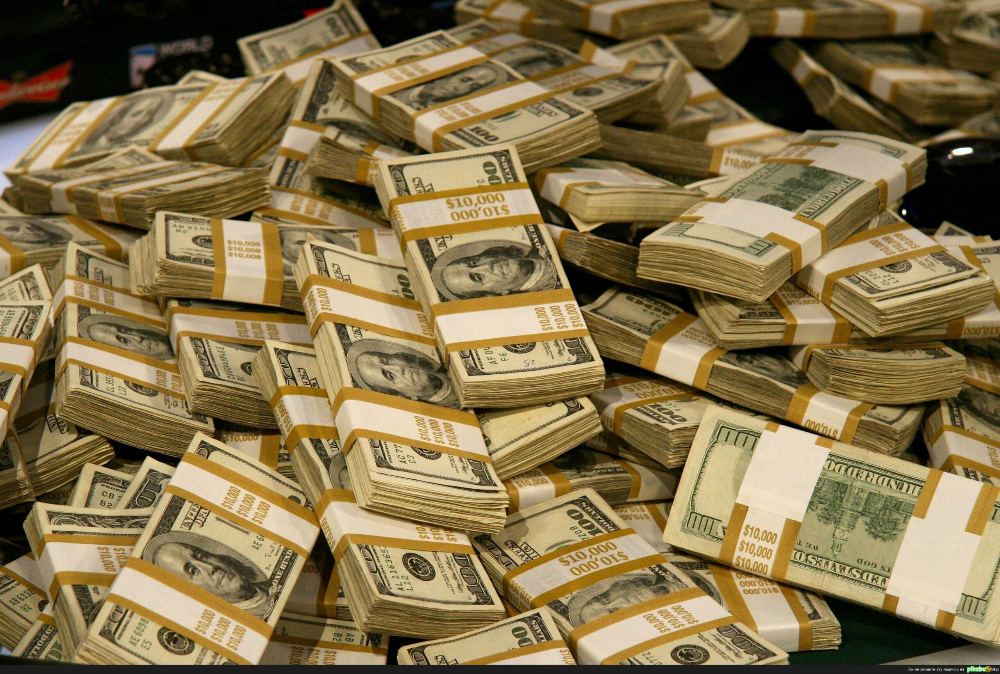

| Страница 1 |
Как деньги влиляли на футбол?
Когда вы думаете о футболе, вам приходят на ум захватывающие игры, страстные болельщики и знаменитые спортсмены.
Но есть и другая сторона этого вида спорта, которая не менее увлекательна: футбольный бизнес.
Деньги и футбол всегда были тесно связаны. Деньги играют решающую роль в самом популярном в мире виде спорта - от зарплат,
выплачиваемых игрокам, до доходов, получаемых клубами, и инвестиций богатых владельцев. Одним из способов влияния денег на футбол является трансферный рынок, где клубы покупают и продают игроков, чтобы улучшить свою команду.
Лучшие клубы Европы ежегодно тратят миллионы фунтов стерлингов на трансферы
а самая дорогая трансферная стоимость достигает более 220 миллионов фунтов стерлингов.
Такие инвестиции могут окупаться, принося в команду звездного игрока и повышая ее результативность на поле.
Еще один способ влияния денег на футбол - спонсорство, когда компании инвестируют в партнерство с клубами и игроками для продвижения своей продукции. Самые богатые клубы мира зарабатывают миллионы на спонсорстве, а некоторые ведущие игроки зарабатывают еще больше.
Например, Лионель Месси, по сообщениям, заработал более 100 миллионов долларов США только на спонсорской помощи в 2021 году.
Но деньги в футболе - это не только большие клубы и звезды
Для многих небольших клубов и сообществ футбол - это способ получения дохода и объединения людей.
Местные команды полагаются на спонсорскую помощь, продажу билетов и товаров для поддержания работы своего клуба,
а спорт может обеспечить рабочие места и стимулировать местную экономику.
Конечно, когда речь заходит о деньгах в футболе, возникают противоречия и подводные камни.
Некоторые критикуют неравенство между самыми высокооплачиваемыми игроками и теми, кто с трудом зарабатывает на жизнь,
а другие ставят под сомнение этику богатых владельцев и их мотивы инвестирования в футбольные клубы. Однако, несмотря на эти проблемы, деньги и футбол продолжают переплетаться, формируя спорт как в положительную, так и в отрицательную сторону.
Независимо от того, являетесь ли вы ярым болельщиком или случайным наблюдателем,
понимание роли денег в футболе поможет вам глубже понять игру и ее влияние на окружающий нас мир.  |